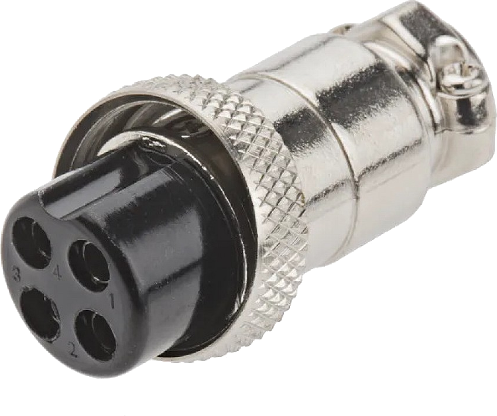

GX-12/4 Plug
Connector
A GX-12/4 female plug is used to connect the signal tower to the Rosetta system. This plug is sometimes called an aviation connector.
Cable Sizing
The cable between the Rosetta system and your signal tower should:
- Have 4 conductors within the cable
- Be stranded - this is more flexible than solid wire
- Be 22 AWG - this is easily soldered to the GX-12 connector. Check the tower's current rating; most LED towers draw under about 100 mA per lamp, which 22 AWG handles easily.
Wiring the Light
| GX-12 Pin | Wire Color | Purpose |
| 1 | Green | +V for green light |
| 2 | Red | +V for red light |
| 3 | Blue | +V for siren |
| 4 | Black | Common GND |
Signal Tower Notes
The signal tower plugs into the Base Box.
The use of a signal tower must be configured on the Inputs, Outputs, and Sounds tab of the Rosetta Settings program. See Signal Tower for when each light and the buzzer come on.